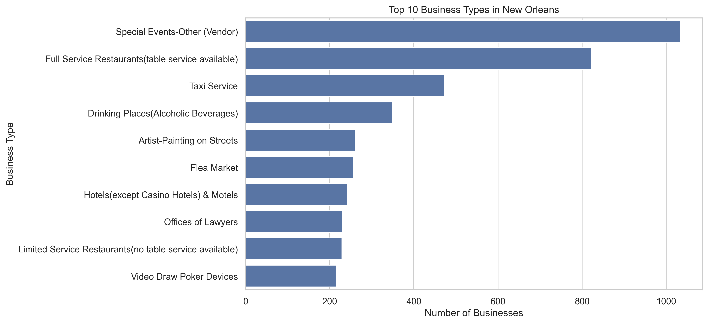
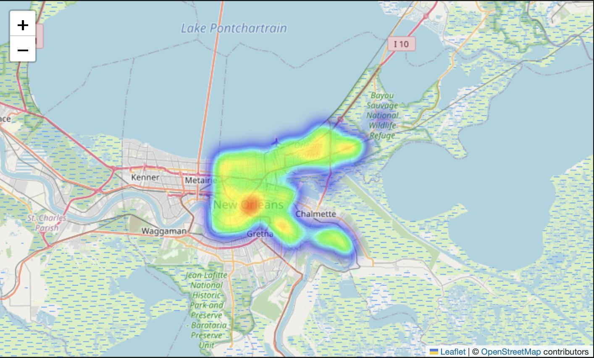
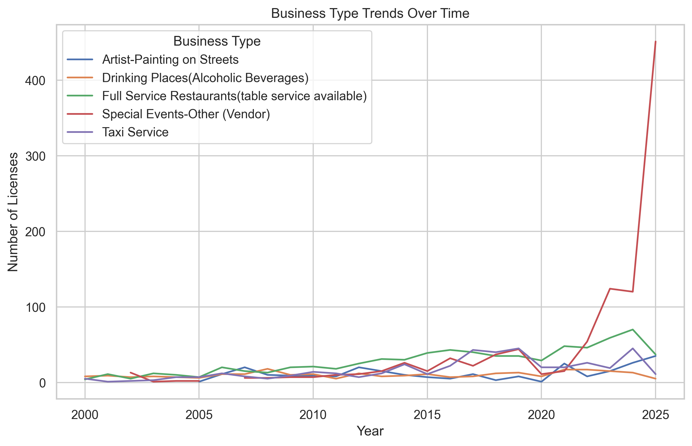

Top 10 Business Types
Highlights the most common licensed business categories in the dataset, helping identify which sectors appear most often in New Orleans.
View full-size chart of top 10 business types in New OrleansA portfolio project focused on exploratory data analysis and geographic visualization of business license activity across New Orleans. This project highlights business concentration, category distribution, and longer-term licensing trends.
Exploratory analysis of business license activity and category patterns
Interactive geographic view of business density across the city
Insights designed for viewer-friendly presentation and interpretation
Built to demonstrate job-ready junior analyst skills in a public project
This project examines New Orleans business license data to better understand where business activity is concentrated, which business categories appear most often, and how licensing patterns change over time.
Analyze business license data to identify key sector trends, business density patterns, and time-based shifts in licensing activity across New Orleans.
This project demonstrates data cleaning, exploratory analysis, visual communication, and public-facing presentation of findings in a format that is easy for recruiters and hiring managers to review.
The interactive map is the main feature of this project and highlights where licensed businesses are concentrated across New Orleans.

This interactive map visualizes the concentration of licensed businesses across New Orleans and helps reveal areas of higher commercial activity.
Rather than listing businesses one by one, the map provides a spatial view of the dataset so viewers can quickly identify clustering and density patterns.
These visuals support the broader analysis by showing leading business categories, geographic business concentration, and changes in activity over time.

Highlights the most common licensed business categories in the dataset, helping identify which sectors appear most often in New Orleans.
View full-size chart of top 10 business types in New Orleans
Shows how business license activity changes over time, helping surface longer-term patterns, shifts, and possible growth periods.
View full-size chart of business license trends over timeThe analysis is intended to move beyond charts alone by providing a concise, viewer-friendly summary of what the visuals suggest.
A relatively small group of business categories appears repeatedly in the dataset, suggesting that certain sectors account for a large share of licensed activity.
Business activity is not evenly distributed. The map helps reveal areas where licensed businesses appear more concentrated, indicating stronger commercial clustering in specific parts of the city.
Time-based analysis adds useful context by showing whether business license activity appears stable, rising, or fluctuating across the available years.
General Project Links
Access the code, project structure, and supporting files used to build this analysis.
Link to the notebook or exported analysis summary when ready.